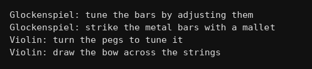

package inheritance;
public class Q282 {
static abstract class Instrument {
abstract void play();
abstract void tune();
}
static class Glockenspiel extends Instrument {
void play(){ System.out.println("Glockenspiel: strike the metal bars with a mallet"); }
void tune(){ System.out.println("Glockenspiel: tune the bars by adjusting them"); }
}
static class Violin extends Instrument {
void play(){ System.out.println("Violin: draw the bow across the strings"); }
void tune(){ System.out.println("Violin: turn the pegs to tune it"); }
}
public static void main(String[] args) {
Instrument i[] = {new Glockenspiel(), new Violin()};
for(int k=0;k<i.length;k++){
i[k].tune();
i[k].play();
}
}
}